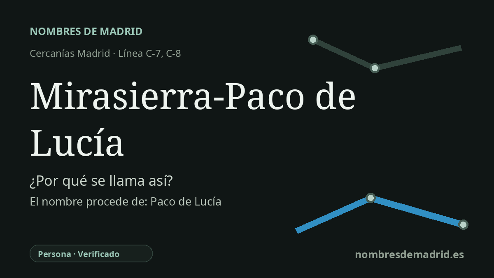

Publicado el · Investigación de Nombres de Madrid · Cómo verificamos cada origen · 8 fuentes consultadas
Respuesta rápida
La estación de Cercanías combina el nombre del barrio, Mirasierra, con Paco de Lucía, el guitarrista flamenco homenajeado en la estación de Metro contigua. El nombre sustituyó referencias previas de proyecto como Costa Brava tras la decisión de la Comunidad de Madrid en febrero de 2014.
La historia del nombre
El nombre Mirasierra-Paco de Lucía une dos capas de identidad local. Mirasierra identifica el barrio madrileño donde se encuentra la estación, mientras que Paco de Lucía procede de la estación contigua de la línea 9 de Metro, denominada en homenaje al guitarrista flamenco Francisco Sánchez Gómez.
Mirasierra nació como una colonia residencial del norte de Madrid. Madrid Film Office, con información de la Fundación Arquitectura COAM, sitúa el origen de la Colonia Mirasierra en un proyecto de 1927 de la Sociedad de Casas Baratas para construir una ciudad satélite ajardinada, después modificada por el Plan de vivienda de 1954 y por el crecimiento urbano desde los años sesenta. El nombre es un compuesto transparente en español: mirar o mira más sierra, entendido habitualmente como alusión a las vistas hacia la cadena montañosa situada al norte de Madrid.
La parte de Paco de Lucía está documentada con más precisión. El 27 de febrero de 2014, dos días después de la muerte del guitarrista en Playa del Carmen, la Comunidad de Madrid anunció que la nueva estación de la línea 9 que se construía junto a la calle Costa Brava, en Mirasierra, llevaría su nombre. La razón oficial combinaba el valor artístico y el vínculo local: había llevado la cultura española más allá de las fronteras y tenía una casa familiar en Mirasierra.
La cronología del transporte explica por qué el nombre de Cercanías es compuesto. Metro abrió Paco de Lucía el 25 de marzo de 2015 como prolongación norte de la línea 9 desde Mirasierra. La estación ferroviaria situada encima fue inaugurada el 5 de febrero de 2018, concebida como enlace intermodal entre Cercanías y Metro para Mirasierra, Montecarmelo y otros barrios del norte.
El nombre previo de proyecto Costa Brava está bien atestiguado en prensa y crónicas de transporte porque la estación se ubica junto a la calle Costa Brava. Para una etimología pública, la interpretación mejor respaldada es que la estación recibe el nombre del topónimo Mirasierra y de Paco de Lucía; el homenaje al guitarrista está verificado por fuentes contemporáneas, mientras que el origen exacto de la palabra Mirasierra es lingüísticamente claro pero no aparece asociado a un acto oficial único de denominación.